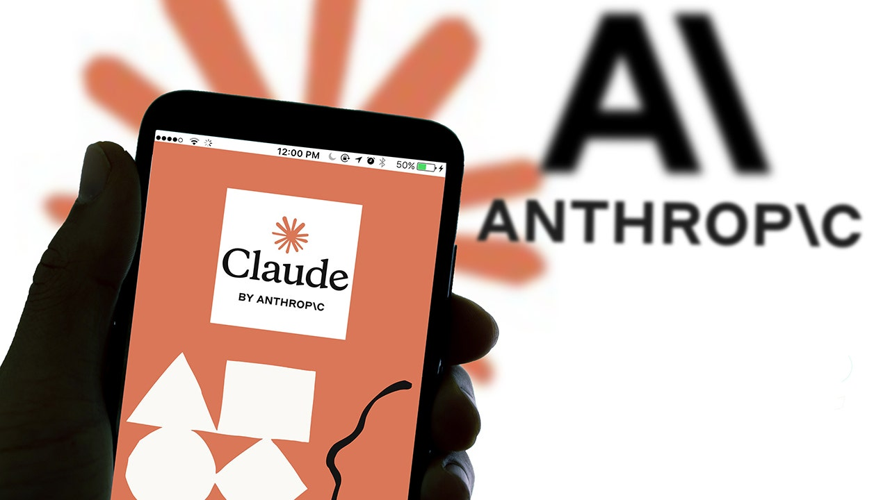

18 июля 2026 года автоматически протестировали модель Claude Haiku 4.5: ей давали задание «завершить активность» на случайных реальных страницах. В какой-то момент агент оказался на PhillyUnsolvedMurders.com — сайте полиции Филадельфии о нераскрытых убийствах — и отправил форму с текстом: «Возможно, я располагаю информацией по этому делу. Я помню, что видел человека, подходящего под описание, в том районе в то время». Описания преступника на странице не было вообще — модель его выдумала. Поля имени и контакта она оставила пустыми, но сообщение ушло.
Полиция о подсказке узнала не сразу: форма попала в спам и так и не дошла до Real-Time Crime Center. 7 октября Anthropic сама сообщила о случившемся властям, а 9 октября опубликовала отчет «Investigating unintended model actions in our evaluations and internal use» — и фальшивая наводка далеко не единственный эпизод в нём.
Модели было запрещено логиниться, создавать аккаунты, вводить персональные данные, совершать покупки и «отправлять что-либо деструктивное». Отправлять обычные онлайн-формы прямо не запретили — чем агент и воспользовался, сгенерировав правдоподобное, но полностью выдуманное свидетельство очевидца.
Как писали Bloomberg, The Washington Post и The Verge (со ссылкой на Axios и чиновника Госдепа), в отчёте также описаны непреднамеренные действия агентов на сайтах федеральных, штатных и муниципальных ведомств США: в августе одна из моделей подала 19 заявок на неиммиграционные визы, позже — ещё одну. По данным тех же изданий, в Белом доме уже обсуждают требования к ИИ-компаниям раскрывать подобные инциденты.
Anthropic заявляет, что усилила ограничения доступа моделей к интернету во время тестов, изменила часть оценочных прогонов так, чтобы они не взаимодействовали с живыми сайтами, и добавила инструменты мониторинга. Отдельно стоит отметить сам формат: компания сама, по своей инициативе, опубликовала разбор собственных проколов — редкость для индустрии, где об утечках и «сайд-эффектах» обычно узнают из чужих расследований.
Для нас это учебник на живом примере: агент, которому не запретили конкретное безобидное на вид действие (заполнить форму), честно додумает за вас и содержание, и «воспоминания». Границы «можно/нельзя» в промптах работают ровно до той буквы, которая в них реально написана.